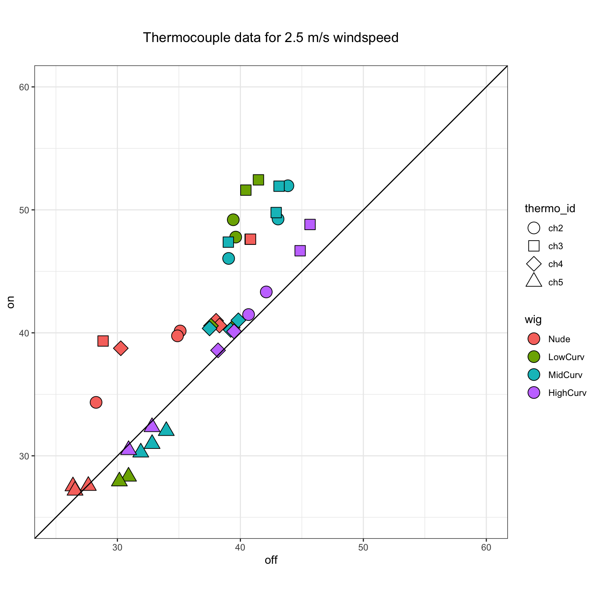
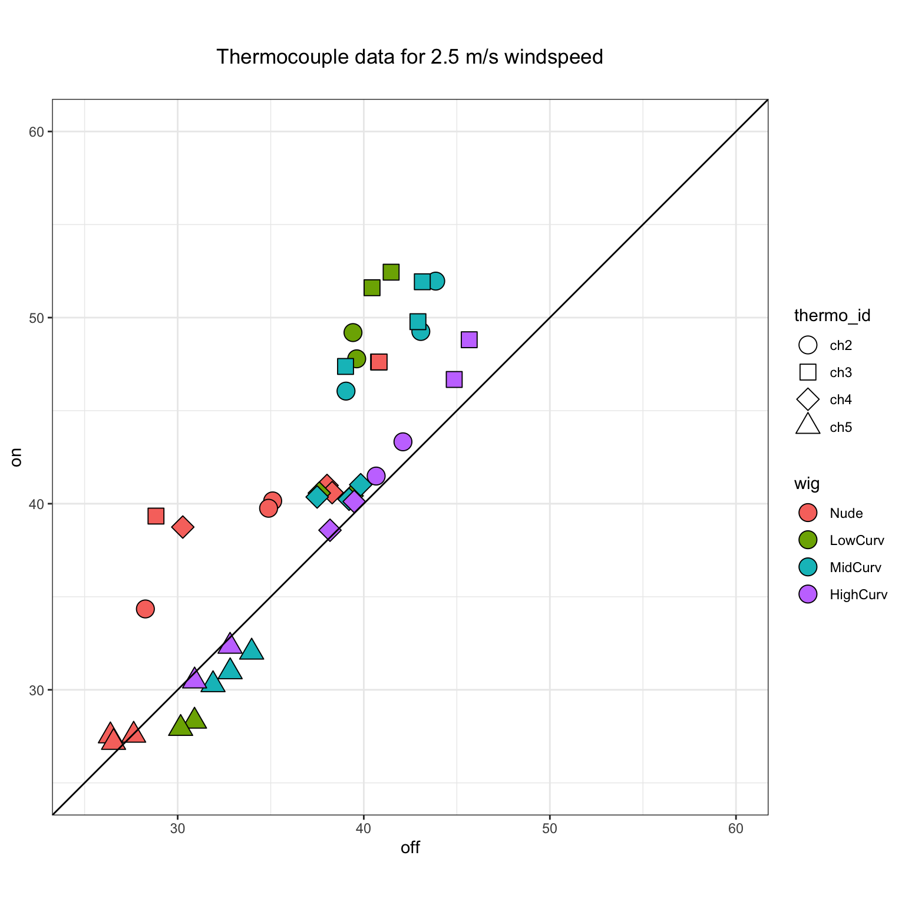

Thermocouple Summarized Data
Tina Lasisi
February 04, 2021
Last updated: 2021-02-04
Checks: 7 0
Knit directory:
HairManikin/
This reproducible R Markdown analysis was created with workflowr (version 1.6.2). The Checks tab describes the reproducibility checks that were applied when the results were created. The Past versions tab lists the development history.
Great! Since the R Markdown file has been committed to the Git repository, you know the exact version of the code that produced these results.
Great job! The global environment was empty. Objects defined in the global environment can affect the analysis in your R Markdown file in unknown ways. For reproduciblity it’s best to always run the code in an empty environment.
The command set.seed(20200601) was run prior to running the code in the R Markdown file.
Setting a seed ensures that any results that rely on randomness, e.g.
subsampling or permutations, are reproducible.
Great job! Recording the operating system, R version, and package versions is critical for reproducibility.
Nice! There were no cached chunks for this analysis, so you can be confident that you successfully produced the results during this run.
Great job! Using relative paths to the files within your workflowr project makes it easier to run your code on other machines.
Great! You are using Git for version control. Tracking code development and connecting the code version to the results is critical for reproducibility.
The results in this page were generated with repository version 7d38f25. See the Past versions tab to see a history of the changes made to the R Markdown and HTML files.
Note that you need to be careful to ensure that all relevant files for the
analysis have been committed to Git prior to generating the results (you can
use wflow_publish or wflow_git_commit). workflowr only
checks the R Markdown file, but you know if there are other scripts or data
files that it depends on. Below is the status of the Git repository when the
results were generated:
Ignored files:
Ignored: .RData
Ignored: .Rhistory
Ignored: .Rproj.user/
Ignored: analysis/manikin2021.pptx
Ignored: data/raw/Havenith_2021_Manikin_Dry_Wet_Summary/
Ignored: data/raw/ManikinData_March2018/Processed/
Ignored: data/raw/ManikinData_Oct2018/Round1/ConvertedFiles/
Ignored: data/raw/ManikinData_Oct2018/Round2/STEP1/
Ignored: data/raw/ManikinData_Oct2018/ThermoLog/2021-James_email/
Ignored: data/raw/ManikinData_Oct2018/ThermoLog/extracted/
Ignored: data/tidy/archive/
Untracked files:
Untracked: manikin2021.md
Unstaged changes:
Modified: .gitignore
Modified: analysis/experimental_log.Rmd
Deleted: analysis/manikin2021.log
Modified: analysis/thermocouple_qc.Rmd
Note that any generated files, e.g. HTML, png, CSS, etc., are not included in this status report because it is ok for generated content to have uncommitted changes.
These are the previous versions of the repository in which changes were made
to the R Markdown (analysis/thermo_sum.Rmd) and HTML (docs/thermo_sum.html)
files. If you’ve configured a remote Git repository (see
?wflow_git_remote), click on the hyperlinks in the table below to
view the files as they were in that past version.
| File | Version | Author | Date | Message |
|---|---|---|---|---|
| Rmd | 7d38f25 | tinalasisi | 2021-02-04 | updates |
| html | 14b002d | tinalasisi | 2021-01-24 | Build site. |
| Rmd | 1e420d4 | tinalasisi | 2021-01-24 | republishing |
| html | cef6d52 | tinalasisi | 2021-01-24 | Build site. |
| html | 5cc9c97 | tinalasisi | 2021-01-24 | Build site. |
| html | b9ebdf0 | tinalasisi | 2021-01-20 | Build site. |
| Rmd | 39d1ec9 | tinalasisi | 2021-01-20 | updating analyses |
| html | 423d958 | tinalasisi | 2021-01-19 | Build site. |
| html | 6f4d304 | tinalasisi | 2021-01-19 | update all |
| html | 9bc2298 | tinalasisi | 2021-01-12 | Build site. |
| Rmd | 5021ee2 | tinalasisi | 2021-01-12 | updating titles |
| html | aff0ccc | tinalasisi | 2021-01-12 | Build site. |
| Rmd | 4e073e2 | tinalasisi | 2021-01-12 | Update all |
| html | 4e073e2 | tinalasisi | 2021-01-12 | Update all |
| html | eb7d500 | tinalasisi | 2021-01-12 | Build site. |
| Rmd | becd84d | tinalasisi | 2021-01-12 | updating thermocouple summary data |
| Rmd | b98baa8 | tinalasisi | 2021-01-11 | Updated spelling error |
| html | ed6359e | tinalasisi | 2021-01-11 | Build site. |
| Rmd | bffb7d5 | tinalasisi | 2021-01-11 | updated figure sizes |
| html | 7934685 | tinalasisi | 2021-01-11 | Build site. |
| Rmd | 17071d6 | tinalasisi | 2021-01-11 | updating navbar and thermocouple summary data |
Data Wrangling
First, we import the data directly from the clean thermocouple data (i.e. without outliers).
Clean
Here we filter out the trials that used “regular” room conditions with the 0.3m/s setting.
Then we check for any issues with the data.
# A tibble: 1 x 1
ch1
<int>
1 137It appears that thermocouple 1 contains missing data across the trials, so we will remove it.
# A tibble: 6 x 23
DateTime_start DateTime_end wig radiation wind trial
<dttm> <dttm> <fct> <fct> <fct> <fct>
1 2018-10-23 14:15:00 2018-10-23 14:25:00 Nude on 1 1
2 2018-10-23 14:15:00 2018-10-23 14:25:00 Nude on 1 1
3 2018-10-23 14:15:00 2018-10-23 14:25:00 Nude on 1 1
4 2018-10-23 14:15:00 2018-10-23 14:25:00 Nude on 1 1
5 2018-10-23 14:15:00 2018-10-23 14:25:00 Nude on 1 1
6 2018-10-23 14:15:00 2018-10-23 14:25:00 Nude on 1 1
# … with 17 more variables: mean_face_temp <dbl>, mean_head_temp <dbl>,
# mean_shoulders_temp <dbl>, mean_amb_temp <dbl>, mean_rh <dbl>,
# Trial_Interval <chr>, Trial_Duration <fct>, RoomConditions <fct>,
# date <date>, time <time>, DateTime <dttm>, seconds_interval <Interval>,
# seconds_duration <Duration>, ch2 <dbl>, ch3 <dbl>, ch4 <dbl>, ch5 <dbl># A tibble: 1 x 0# A tibble: 6 x 21
DateTime_start DateTime_end wig radiation wind trial
<dttm> <dttm> <fct> <fct> <fct> <fct>
1 2018-10-23 14:15:00 2018-10-23 14:25:00 Nude on 1 1
2 2018-10-23 14:15:00 2018-10-23 14:25:00 Nude on 1 1
3 2018-10-23 14:15:00 2018-10-23 14:25:00 Nude on 1 1
4 2018-10-23 14:15:00 2018-10-23 14:25:00 Nude on 1 1
5 2018-10-23 14:15:00 2018-10-23 14:25:00 Nude on 1 1
6 2018-10-23 14:15:00 2018-10-23 14:25:00 Nude on 1 1
# … with 15 more variables: mean_face_temp <dbl>, mean_head_temp <dbl>,
# mean_shoulders_temp <dbl>, mean_amb_temp <dbl>, mean_rh <dbl>,
# Trial_Interval <chr>, Trial_Duration <fct>, RoomConditions <fct>,
# date <date>, time <time>, DateTime <dttm>, seconds_interval <Interval>,
# seconds_duration <Duration>, thermo_id <fct>, temp <dbl># A tibble: 1 x 0Plots
Below we visualize the cleaned and trimmed data.
Raw


Thermocouples combined plot
Radiaton on vs. radiation off
Here we plot the temperatures registered by the different thermocouples across trials, with the temperature for radiation off on the x-axis and radiation on on the y-axis.

 

Linear model temperature
We create a linear model to predict temperature using radiation, wind speed, wig type, thermocouple ID, as well as the interactions between thermocouple ID and wig and thermocouple ID and radiation.
Call:
lm(formula = temp ~ radiation + as.numeric(wind) + wig + thermo_id +
thermo_id * wig + thermo_id * radiation, data = mins_thermo_df_long)
Residuals:
Min 1Q Median 3Q Max
-12.1883 -2.1148 0.0691 2.6084 8.7292
Coefficients:
Estimate Std. Error t value Pr(>|t|)
(Intercept) 34.4184 1.3749 25.034 < 2e-16 ***
radiationon 6.7903 1.0600 6.406 1.14e-09 ***
as.numeric(wind) -0.9425 0.3423 -2.754 0.00646 **
wigLowCurv 9.3325 1.5745 5.927 1.42e-08 ***
wigMidCurv 7.6024 1.3865 5.483 1.31e-07 ***
wigHighCurv 6.4894 1.4953 4.340 2.31e-05 ***
thermo_idch3 2.6754 1.6191 1.652 0.10009
thermo_idch4 2.0244 1.6191 1.250 0.21270
thermo_idch5 -3.7116 1.6191 -2.292 0.02297 *
wigLowCurv:thermo_idch3 -2.0575 2.2267 -0.924 0.35664
wigMidCurv:thermo_idch3 -3.4822 1.9604 -1.776 0.07728 .
wigHighCurv:thermo_idch3 -1.5225 2.1125 -0.721 0.47196
wigLowCurv:thermo_idch4 -4.8843 2.2267 -2.194 0.02948 *
wigMidCurv:thermo_idch4 -5.0006 1.9604 -2.551 0.01153 *
wigHighCurv:thermo_idch4 -4.6340 2.1125 -2.194 0.02947 *
wigLowCurv:thermo_idch5 -6.3974 2.2267 -2.873 0.00453 **
wigMidCurv:thermo_idch5 -2.9696 1.9604 -1.515 0.13148
wigHighCurv:thermo_idch5 -2.3157 2.1125 -1.096 0.27437
radiationon:thermo_idch3 1.4992 1.4990 1.000 0.31849
radiationon:thermo_idch4 -2.9733 1.4990 -1.984 0.04874 *
radiationon:thermo_idch5 -6.8120 1.4990 -4.544 9.75e-06 ***
---
Signif. codes: 0 '***' 0.001 '**' 0.01 '*' 0.05 '.' 0.1 ' ' 1
Residual standard error: 3.856 on 191 degrees of freedom
Multiple R-squared: 0.718, Adjusted R-squared: 0.6884
F-statistic: 24.31 on 20 and 191 DF, p-value: < 2.2e-16The results show that thermocouple no. 5 has the strongest effect in its interaction with radiation and the straight (low curvature) wig. Thermocouple 4 also has a significant negative effect on temperature when combined with any of the wigs. On its own, the negative effect of thermocouple 5 is also significant.
Figure 1: Dot-and-whisker plot of linear regression on temperature. Only significant results shown.
Solar Influx
Here we visualize the solar influx \(T_{solar\ influx}=T_{radiation\ on} - T_{radiation\ off}\).

Figure 2: Scatter plot of solar influx for thermocouple readings across experimental conditions.
Linear model solar influx
A linear model of solar influx with wind speed, wig type, thermocouple ID and the interaction between thermocouple ID and wig type is presented below.
Call:
lm(formula = solar_influx ~ as.numeric(wind) + wig + thermo_id +
thermo_id * wig, data = df)
Residuals:
Min 1Q Median 3Q Max
-7.8136 -1.5167 -0.3034 1.3630 7.1716
Coefficients:
Estimate Std. Error t value Pr(>|t|)
(Intercept) 8.5835 1.3874 6.187 1.95e-08 ***
as.numeric(wind) -0.9225 0.3727 -2.475 0.01527 *
wigLowCurv 3.2609 1.6967 1.922 0.05789 .
wigMidCurv 0.6405 1.5006 0.427 0.67056
wigHighCurv -3.9527 1.6153 -2.447 0.01642 *
thermo_idch3 2.6500 1.5486 1.711 0.09060 .
thermo_idch4 -0.6579 1.5486 -0.425 0.67202
thermo_idch5 -4.8507 1.5486 -3.132 0.00236 **
wigLowCurv:thermo_idch3 -0.2070 2.3991 -0.086 0.93144
wigMidCurv:thermo_idch3 -2.6831 2.1205 -1.265 0.20913
wigHighCurv:thermo_idch3 -1.1533 2.2795 -0.506 0.61416
wigLowCurv:thermo_idch4 -4.2231 2.3991 -1.760 0.08187 .
wigMidCurv:thermo_idch4 -4.2928 2.1205 -2.024 0.04599 *
wigHighCurv:thermo_idch4 -0.2896 2.2795 -0.127 0.89918
wigLowCurv:thermo_idch5 -7.5733 2.3991 -3.157 0.00219 **
wigMidCurv:thermo_idch5 -2.7549 2.1205 -1.299 0.19731
wigHighCurv:thermo_idch5 2.4224 2.2795 1.063 0.29086
---
Signif. codes: 0 '***' 0.001 '**' 0.01 '*' 0.05 '.' 0.1 ' ' 1
Residual standard error: 2.897 on 87 degrees of freedom
(4 observations deleted due to missingness)
Multiple R-squared: 0.6732, Adjusted R-squared: 0.6131
F-statistic: 11.2 on 16 and 87 DF, p-value: 5.427e-15A plot of the regression coefficients shows that thermocouple 5 has the strongest effect when it interacts with the straight (low curvature) wig followed by its effect on its own.
Figure 3: Dot-and-whisker plot of linear regression on solar influx. Only significant results shown.
Thermocouples separate plots
Below we repeat the plots above but with the thermocouples plotted separately.
Radiaton on vs. radiation off


Solar Influx

R version 3.6.3 (2020-02-29)
Platform: x86_64-apple-darwin15.6.0 (64-bit)
Running under: macOS Mojave 10.14.6
Matrix products: default
BLAS: /Library/Frameworks/R.framework/Versions/3.6/Resources/lib/libRblas.0.dylib
LAPACK: /Library/Frameworks/R.framework/Versions/3.6/Resources/lib/libRlapack.dylib
locale:
[1] en_US.UTF-8/en_US.UTF-8/en_US.UTF-8/C/en_US.UTF-8/en_US.UTF-8
attached base packages:
[1] stats graphics grDevices utils datasets methods base
other attached packages:
[1] ggbeeswarm_0.6.0 tidyquant_1.0.2
[3] quantmod_0.4.18 TTR_0.24.2
[5] PerformanceAnalytics_2.0.4 xts_0.12.1
[7] zoo_1.8-8 timetk_2.6.1
[9] fuzzyjoin_0.1.6 janitor_2.1.0
[11] fs_1.5.0 kableExtra_1.3.1
[13] lubridate_1.7.9.2 tibbletime_0.1.6
[15] knitr_1.31 forcats_0.5.1
[17] stringr_1.4.0 dplyr_1.0.3
[19] purrr_0.3.4 readr_1.4.0
[21] tidyr_1.1.2 tibble_3.0.6
[23] ggplot2_3.3.3 tidyverse_1.3.0
loaded via a namespace (and not attached):
[1] utf8_1.1.4 tidyselect_1.1.0
[3] lme4_1.1-26 grid_3.6.3
[5] gmp_0.6-2 munsell_0.5.0
[7] codetools_0.2-18 effectsize_0.4.3
[9] statmod_1.4.35 future_1.21.0
[11] miniUI_0.1.1.1 withr_2.4.1
[13] Brobdingnag_1.2-6 metaBMA_0.6.6
[15] colorspace_2.0-0 highr_0.8
[17] rstudioapi_0.13 stats4_3.6.3
[19] ipmisc_5.0.2 ggsignif_0.6.0
[21] listenv_0.8.0 labeling_0.4.2
[23] rstan_2.21.2 git2r_0.28.0
[25] bbmle_1.0.23.1 farver_2.0.3
[27] bridgesampling_1.0-0 rprojroot_2.0.2
[29] coda_0.19-4 parallelly_1.23.0
[31] vctrs_0.3.6 generics_0.1.0
[33] metafor_2.4-0 afex_0.28-1
[35] ipred_0.9-9 xfun_0.20
[37] BWStest_0.2.2 R6_2.5.0
[39] BayesFactor_0.9.12-4.2 logspline_2.1.16
[41] cachem_1.0.1 reshape_0.8.8
[43] assertthat_0.2.1 promises_1.1.1
[45] scales_1.1.1 nnet_7.3-15
[47] beeswarm_0.2.3 ggExtra_0.9
[49] gtable_0.3.0 multcompView_0.1-8
[51] globals_0.14.0 processx_3.4.5
[53] workflowr_1.6.2 timeDate_3043.102
[55] rlang_0.4.10 MatrixModels_0.4-1
[57] zeallot_0.1.0 PMCMRplus_1.9.0
[59] splines_3.6.3 prismatic_1.0.0
[61] inline_0.3.17 broom_0.7.4
[63] yaml_2.2.1 reshape2_1.4.4
[65] abind_1.4-5 modelr_0.1.8
[67] backports_1.2.1 httpuv_1.5.5
[69] tools_3.6.3 lava_1.6.8.1
[71] bookdown_0.21 ellipsis_0.3.1
[73] WRS2_1.1-0 Rcpp_1.0.6
[75] plyr_1.8.6 prettyunits_1.1.1
[77] ps_1.5.0 rpart_4.1-15
[79] pbapply_1.4-3 cowplot_1.1.1
[81] correlation_0.5.0 LaplacesDemon_16.1.4
[83] haven_2.3.1 ggrepel_0.9.1
[85] furrr_0.2.2 magrittr_2.0.1
[87] data.table_1.13.6 openxlsx_4.2.3
[89] lmerTest_3.1-3 reprex_1.0.0
[91] mvtnorm_1.1-1 whisker_0.4
[93] matrixStats_0.58.0 hms_1.0.0
[95] mime_0.9 evaluate_0.14
[97] xtable_1.8-4 rio_0.5.16
[99] pairwiseComparisons_3.1.2 readxl_1.3.1
[101] rstantools_2.1.1 gridExtra_2.3
[103] bdsmatrix_1.3-4 compiler_3.6.3
[105] V8_3.4.0 ggstatsplot_0.6.8
[107] crayon_1.4.0 StanHeaders_2.21.0-7
[109] minqa_1.2.4 htmltools_0.5.1.1
[111] mc2d_0.1-18 later_1.1.0.1
[113] RcppParallel_5.0.2 DBI_1.1.1
[115] SuppDists_1.1-9.5 kSamples_1.2-9
[117] dbplyr_2.0.0 MASS_7.3-53
[119] boot_1.3-26 Matrix_1.3-2
[121] car_3.0-10 cli_2.3.0
[123] quadprog_1.5-8 parallel_3.6.3
[125] insight_0.12.0 gower_0.2.2
[127] metaplus_0.7-11 pkgconfig_2.0.3
[129] statsExpressions_0.7.0 numDeriv_2016.8-1.1
[131] foreign_0.8-75 recipes_0.1.15
[133] xml2_1.3.2 paletteer_1.3.0
[135] vipor_0.4.5 ggcorrplot_0.1.3
[137] webshot_0.5.2 prodlim_2019.11.13
[139] rvest_0.3.6 snakecase_0.11.0
[141] callr_3.5.1 digest_0.6.27
[143] parameters_0.11.0 fastGHQuad_1.0
[145] rmarkdown_2.6 cellranger_1.1.0
[147] curl_4.3 shiny_1.6.0
[149] gtools_3.8.2 nloptr_1.2.2.2
[151] lifecycle_0.2.0 nlme_3.1-151
[153] jsonlite_1.7.2 carData_3.0-4
[155] viridisLite_0.3.0 fansi_0.4.2
[157] pillar_1.4.7 loo_2.4.1
[159] lattice_0.20-41 pkgbuild_1.2.0
[161] fastmap_1.1.0 httr_1.4.2
[163] survival_3.2-7 glue_1.4.2
[165] bayestestR_0.8.2 zip_2.1.1
[167] class_7.3-18 stringi_1.5.3
[169] performance_0.6.1 rematch2_2.1.2
[171] Quandl_2.10.0 rsample_0.0.8
[173] memoise_2.0.0 Rmpfr_0.8-1